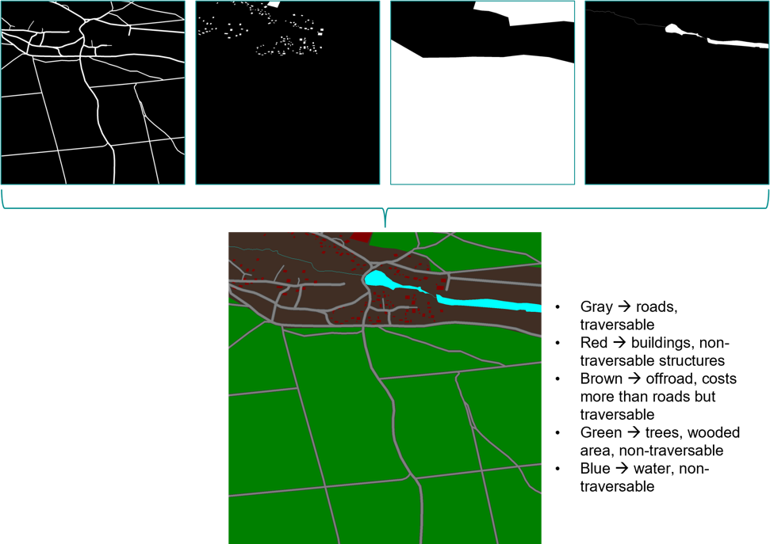
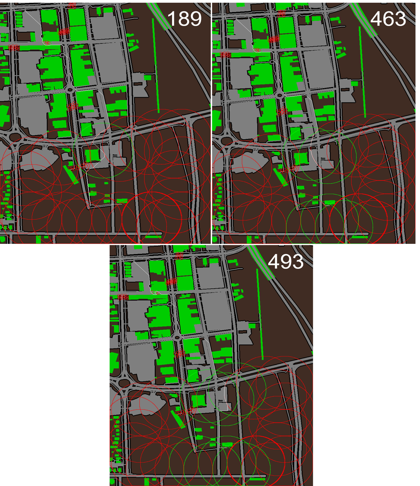
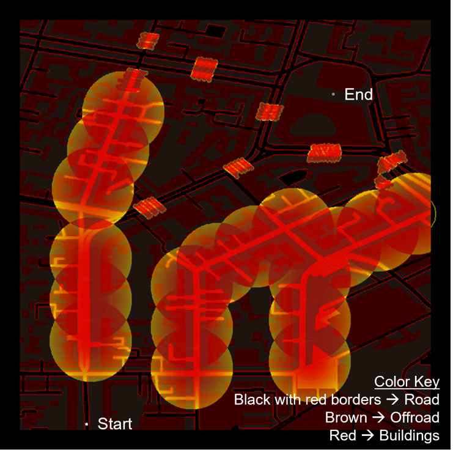

Simulations for route planning and breaching in Phase I involved the development of a simulation map created by fusing different layers of data together into a single image. For current simulations, each pixel of the simulation map represents a 1 meter by 1 meter area. Figure 4 shows the layers that are fused for the simulation risk-map.

The Phase I minefield prediction algorithm applies mine type and positional information (in practice, sensor detection data) to produce a final gridded mine risk-map (simulation map). Each grid cell has a probability that a mine strike may occur. The risk probability is one in the proximity radius of standard mines and zero outside of it. For top-attack mines, a maximum detection range and a launch attack range is specified. Within the detection range, the risk is non-zero but not one, while within the launch range, the risk is one everywhere. The mine risk is described further in the section about minefield types below. Figure 5 displays the radii for two overlapping top-attack mines. Regions colored in yellow are within the detection radius and regions shaded in red are within the attack radius. Note the region of overlap between the two mines, the red color demonstrates the increase in risk due to the vicinity of the two mines.
For a given path P traversing any grid cells \(x_{1}\), \(x_{2}\), \(x_{3}\), …\(x_{n}\), on the map, the total probability of encountering a mine can be calculated as path-risk R(P) = \(\mathbf{1 -}\prod_{\mathbf{i}}^{}{\mathbf{(1 -}\mathbf{p}_{\mathbf{i}}\left( \mathbf{x} \right)\mathbf{)}}\), where \(p_{i}\) is the probability of mine-strike in grid x. R(P) is a cost that the route planning algorithm minimizes, the overall mine-encounter risk when traversing a path. Additional constraints such as time or distance minimization are also included in calculating the overall cost of traversing any given path.
Measurement error and differing qualities of data sources are major factors to consider when setting up the simulations as bad quality data leads to errors in geo-registration (Figure 6). Pre-processing the data before geo-registration is necessary for simulation accuracy, especially as different types of GIS data are added and accounted for.
A related factor to consider for simulation accuracy is a data source’s time of collection. When using two different data sources for different aspects of a simulation, if they were collected on different dates, it is possible that one source accounts for a structure or road that the other does not.
The A* family of algorithms are all edge-restricted path planners based on the Dijkstra algorithm (Figure 3). All will start at an initial node (grid location) and iteratively visit neighboring nodes as allowed by the defined environment (gridded gameboard). The individual and total path cost is incrementally updated, as the cost to visit each node starting from the initial position. The optimal path to the end node is discovered in this process, if the environment allows it (i.e., no obstacles fully occluding access from the start to end node). The improvements in the newer approaches focus on compute optimization and the addition of different constraints to vary obstacle costs, enforce smooth paths, etc. The A* (Graph Search) algorithms are the best choice for developing a baseline for AI-Routes mine breacher and route planning. The algorithms’ architecture facilitates the use of distinct data (grid) layers in the design process, allowing for easy extension of path constraints or breacher and mine capabilities. The algorithms are deterministic, supporting interpretability of the ML modeling (Explainable AI), and the results in a given environment are both optimal and complete (Table 1) [10].
CSLabs, using the A* approach as a baseline, developed a prototype algorithm for AI-Routes that calculates the optimal path and breacher firing patterns. The A* pathfinding was modified to interact with objects on the gameboard, particularly mine types. Consequently, applying object properties to the gameboard grid, provides the path finding algorithms with relative distance and position information from any node, in a manner that is computationally efficient.
While the A* approach by itself provides an optimal path, the combination of mine states (armed/disarmed) and paths is a combinatoric problem; where every mine state (armed/disarmed) represents a possible permutation. Figure 7 demonstrates this. Node 1 is the optimal path with no mines, and every branch that follows represents a permutation with active mines. Each level L (0..4), represents a path decision and each left going branch (even numbered) represents a mine group that is breached, while the right going branch (odd numbered) represents a mine group that is not breached, thus an alternate path around the mine group must be found. Each mine group is a set of one-to-many mines that are co-located and must be removed from the path for a tank to traverse the current path-under-test (PUT). Each node greater than 1 is a decision point. For example, if the set of mine encounters is only four levels deep as seen in the figure, then PUT progression 1-2-4-8-16 gives the path where all mines are removed from the optimal path. In this case, the optimal path is identical to the path with no mines (node 1). At the other extreme, PUT progression 1-3-7-15-31 represents the path that avoids all mines (if such a path exists) and no mine breachers are expended. To test all possible options, in the worst-case scenario, the total number of paths N for all permutations to a given level L is:
\[N = 2^{L + 1} - 1.\]
N total simulations would need to be performed to find all combinations of path-mine options available. This is clearly an intractable problem if not bound, of order O(\(2^{L}\)), where L will be proportional to the total number of mines. Fortunately, the problem is reducible in several ways. Firstly, the mines are grouped spatially to reduce the total number of levels (tree depth). The individual branches that form may be pruned based on threshold criteria, such as maximum path length, total mines breached, path difficulty, etc. Unnecessary branches are limited by utilizing path similarity metrics. The spatial domain is further decomposed, when necessary, to limit the depth of successive branches. This recasts the problem as a series of O(\(2^{\rho}\)) problems, where ρ is proportionate to the average count of mine groups in the decomposed regions and is much less than the total mine groups.
The described approach with minimal computational optimizations completes all permutations on the order of minutes with the current test cases of size 1 km x 1 km at one meter resolution, tested on a modern i7 six core laptop. The design of this baseline algorithm is embarrassingly parallel, so processing is easily split across multiple processors with minimal cost, yielding speed increases proportional to the number of cores available. Additional optimizations are expected to improve performance by factors of 10x-100x.
In Phase II development, the existing capability will support the training of supervised AI learning algorithms to further improve route and breacher planning.
In Phase I, the breachers are modeled as mobile objects with configurable parameters. Top down breachers are modeled using the following parameters:
Position (latitude, longitude)
Total rounds
Range in meters
Targeting rules
The position can be set to remain fixed for the simulation, or the breacher can move with the path predictions. Alternate position rulesets can be added as required in Phase II. The total rounds that the breacher can launch and the maximum range of effectiveness are configurations set by the user at run-time. Finally, targeting rules for the breacher are implemented by adding constraints such as local obstruction heights and other physical limitations. The breacher accesses other grid layers (such as DEM or building information) to determine whether the target is obstructed. When the target (mine) is obstructed, then the breacher is ineffective and the mine is not removed.
Several types of mines were modeled in the simulations, all of which were anti-tank mines. In the future, anti-personnel mines may be modeled as well depending on simulation scenarios and customer feedback. The standard mine used was the TM-62M mine, an anti-tank blast mine which consists of a circular metal case and utilizes a pressure-activated fuze for detonation. This is the most commonly found variant in the Russian-Ukrainian conflict [2]. There are other fuses that can be used with this mine that are vibration or magnetic sensitive. These mines were given a five-meter radius in the simulation to account for safe standoff distance when creating paths around them. The mine variables such as the radius are parametrized and easily updated.
Two other types of mines modeled in the simulations include the PTKM-1R and M93 Hornet. Both mines use a top-attack munition and find their targets using various sensors. The PTKM-1R mine uses seismic and thermal sensors [2] while the M93 Hornet uses seismic, acoustic, and infrared sensors. For the purposes of simulation, the PTKM-1R was of interest, but there was limited information available, so the M93 Hornet information was used in some decisions about modeling the PTKM-1R, given the mines’ similarities. One such decision was location of mine placement. As shown in Figure 8, the M93 Hornet is to be placed a certain distance from obstructions. These same rules were used for placing the PTKM-1R. For sensor ranges, the M93 Hornet can find targets up to 100 meters away while different sources give different ranges for the PTKM-1R. One source says that it has a range of up to 50 meters [4]. Another source puts its range between 200 to 300 meters [2]. For the sake of simulation, 100 meters was used as the detection radius, the bounds in which path risk starts to increase (since a launch is possible after detection), and 50 meters was used as the danger radius, the bounds in which the path risk is maximum (a launch is imminent). As mines are parameterized in AI-Routes, these numbers can be adjusted as needed. The risk probabilities have not been well studied, so the modeling is parametrized for easy future updates. The current risk as a function of distance from the mine is given by:
\[P(r) = \left\{ \begin{matrix} 1,\ \ r < r_{l} = 50m \\ e^{- \frac{{r - r_{l}}^{2}}{\sigma^{2}}},\ r_{l} \leq r \leq r_{d} = 100m \\ 0,\ \ r > r_{d}, \\ \end{matrix} \right.\ \]
Where rl is the launch radius, rd is the detection radius, and σ is a free parameter used to adjust how quickly the risk monotonically drops as the distance from rl increases.
Leveraging the AI-Routes layered grid architecture, the development of mine and mine breacher entities are abstracted as objects, which independently contribute to a distinct input layer of the A* algorithm that modifies path cost; each layer is used in the (route) cost function f(n) that is evaluated for every grid position ‘n’ in the path and is the total cost to reach that grid position. f(n) is the linear combination of the actual path-cost g(n) from the start grid node to the current node and estimated path-cost h(n), typically measured as the L1 or L2 norm from current node to the target final grid position.
\[f(n) = W_{g}g(n) + W_{h}h(n)\]
g(n) incorporates:
path cost
mine risk
terrain difficulty
obstacle cost
The obstacle cost can represent an object that must be circumvented (e.g. buildings), or removable obstacles that may be crashed through, but as a penalty in the cost function. Additional cost metrics can be added easily, due to the layered grid design of the data organization.
The weights that determine the importance of each cost term are given by \(W_{g}\) and \(W_{h}\), where:
\[W_{g} + W_{h} = 1.\]
For example, if \(W_{h} \ll W_{g}\), then the paths preferred will not focus on the shortest possible distance to the goal. The path cost g(n) can also be modified to use path history (dynamic) information. The cost function may be modified for kinematic conditions at the current node, for example, variables such as path derivatives may be used to reduce sharp turns that a tank may not make.
Path selection is straight forward matter of determining the overall metrics that are considered most important. The current metrics tracked:
Path length
Path risk
Path difficulty
Mine breached.
In Phase I, the top results presented were paths with minimum overall distance, risk, difficulty, and mines breached. This search was implemented as a sort and select procedure. The family of paths output are each optimal for the selection of mines and obstacles avoided, but variation in risk, difficulty, and total mines breached allows fine tuning of the preferred path based on reduction of risk, total breacher rounds, or other constraints. The output paths are sorted in ascending order according to the primary metric of interest, then the top results are sorted for secondary metrics. For example, if minimizing the distance traveled is most important, then path length is the primary metric, and the secondary metric that is minimized is path risk. Other metrics further minimized may be total mines breached. The order of this process begins with the most valued metric and the subset is reduced based on the secondary constraints. The top paths are output to the user for visual inspection.
The first simulation scenarios were developed to understand and test algorithm results (Figure 9). Scenario 1 gives a limited set of allowable paths to ensure the algorithm is working as intended. It includes a road with a conventional AT mine and a couple of top-attack AT mines. Scenario 2 tests a two-row field of top-attack mines (like the PTKM-1R or Hornet) with a fence and road going through it. The offroad region in this scenario is traversable, albeit, at a higher path cost which will increase the path difficulty if taken. These scenarios are handmade scenarios not based on any real-world GIS data. In both scenarios, there are no paths that can completely avoid mines without breacher rounds. The conventional AT mines in all scenarios use a danger radius of five meters (which acts as the required safe standoff distance for a path to go around it). The top-attack AT mines in all scenarios use an outer radius of 100 meters with an inner (launch) radius of 50 meters. The risk increases from the outer radius to the inner radius. A path cannot go within the radius of conventional AT mines or within the inner radius of a top-attack mine as that is considered too high of a risk.
Simulation results for scenario 1 (Figure 10) show that the modified A* algorithm successfully found all four possible successful path-breacher configurations. Path 6 minimizes path length and risk and results in the use of three breacher rounds to clear the path. Path 4 minimizes the use of breacher rounds but increases the path risk since the path goes within the outer (detection) radius of the top-attack mine but remains outside the inner (launch) radius; the path risk accumulates according to the length of the path inside the detection radius. Paths 4 and 9 avoid the inner radius of the top-attack mines by taking the longer path to get to the path endpoint. Higher path difficulty in paths 1 and 4 are a result of the paths going slightly offroad to avoid active mines.
Results for scenario 2 (Figure 11) show three optimal paths: minimized path length, minimized breacher rounds used, and a best overall minimization of path risk, difficulty, and mines breached. Path 340 neutralizes four mines and travels straight through on the road. Path 215 maintains low risk by neutralizing three mines and then tracing a path around the 100-meter perimeter of remaining mines. Finally, path 3 has higher risk but only utilizes one breacher round and reduces risk as much as possible by tracing a path between two 100-meter mine perimeters and maximizing distance from a third active mine. Furthermore, path difficulty is increased on this path by the need to crash through the fence and travel on more difficult offroad terrain. It should also be noted that the path risk score accumulates from distance traveled within the 100-meter perimeter of the active mines.
For this and subsequent scenarios, GIS tools were used to retrieve geo-registered data for creating simulations at real-world locations, including DEM data (Figure 12). The simulation map for this scenario is a fusion of street map data including roads, parking lots, buildings, and other large structures (Figure 13).
Both conventional and top-attack AT mines were placed throughout the scene. The start point for the path is in the upper-left corner of the map and the goal end point is by a building in the south-central region of the map.
As with the initial scenarios, running simulations for this urban environment results in path options that best minimize different metrics (Figure 14). Path 189 shows the path that minimizes breacher round usage to only three by tracing the perimeter of an active top-attack mine until it needs to go into its 100-meter perimeter to go around a building, quickly leaving the perimeter of the active mine when possible. Path 493 minimizes path risk and difficulty, but uses the most breacher rounds, neutralizing ten mines. It takes the most direct path through the streets taking out any mines that are in that direct path. Path 463 balances minimizing path risk and breacher rounds while taking a path that is just slightly more difficult.

Following direction from C5ISR during the meeting on January 23rd, 2023, the focus was shifted to simulating the types of scenarios and situations that are likely to become relevant to the United States given the current geopolitical climate. To that end, the next two scenarios focus on environments that may be found in the Russia-Ukraine conflict.
The first of the two scenarios is an urban map built from GIS data of a 1 km x 1 km area in the city of Kyiv (Figure 15). The starting point is in the southwestern portion of the map and the endpoint is by a large building in the northeast portion of the map. This iteration of the simulation engine also allows for parameterizing the breacher system. The breacher, in this case, is placed at the same location as the start point for the path and has a range of 1 km, which gives it range to neutralize mines throughout the entire simulation map. As with all the other scenarios, both conventional and top-attack mines were placed throughout the scene. During discussions about this scenario at the bi-monthly meeting on March 6th, 2023, the customer indicated that it would be unlikely for top-attack mines to be used in an urban environment as there would be concern about other structures in the area setting off the mine besides intended targets. Since these simulations were made before that discussion, there are top-attack mines present in the scenario. In future simulations of this or similar scenarios, those mines can be removed and replaced with more conventional AT mines.

Path 298 from this simulation shows a path that avoids having to neutralize any mines but has a higher path risk and much higher path difficulty than the other optimal paths. The path achieves this by weaving through and around buildings on offroad paths. It is important to note that the pathfinding algorithm does not currently account for a minimum width of the path so portions of the path involve spaces that are three to four meters in width whereas a ten meter width of clearance would be required in reality as per discussions in customer meetings on January 23rd, 2023, and March 6th, 2023. This is something that will be addressed in future iterations of AI-Routes and is discussed further in section 3.5. Paths 3676 and 3524 are similar, with 3676 minimizing breacher usage and 3524 minimizing path difficulty (Figure 16). An interesting note about these paths is that near the beginning of the paths, both paths take a turn onto a smaller road and then turn back onto the main road. It would make more sense to just go straight through the main road. This anomaly is a result of the A* algorithm heuristic cost function, in that the pathfinding always tends towards the direction of the endpoint of the path. This may be improved by tweaking path “weight” parameters or adding smoothness constraints. Secondary path processing can also be applied since the “main” optimal path has been found and only requires minor smoothing which can be done independent of the primary cost optimizations.
The last scenario that was developed during Phase I was a 1.7 km x 1.7 km region of forest and a small part of a village that is north-northwest of Kyiv (Figure 17). The starting point for this is in the southwest corner of the map, and the ending point is in the north-central part of the map on a road that goes over a stream/river. Conventional AT mines were placed at intersections to block roads that lead to the village. Top-attack mines were placed along the road that runs along the south side of the village to deny entry into the village. The breacher system is co-located with the starting point.
For the first simulation results of this scenario (Figure 18), the breacher was given a large enough range to neutralize any mines on the map. Path 580 minimizes the use of breacher rounds, neutralizing only five mines including one top-attack mine and four conventional AT mines. The path taken is the most direct to the objective endpoint. It travels through the row of top-attack mines avoiding getting too far into the perimeters of the adjacent mines to reduce risk as much as possible and then goes around the road to avoid a group of AT mines at the end. Path 2587 takes the same route as path 580 but neutralizes more of the top-attack mines to minimize the path risk. Path 44366 is like path 2587 except that it also destroys the AT mines on the road at the end to minimize path difficulty and risk while using the most breachers.
The second set of simulation results for this scenario gives the breacher a limited range of 1 km (Figure 19). This limits its ability to take out mines at the end of the path. Path 82 is like path 580 from the previous set of paths except that it destroys a different set of mines in the forest road intersection. For the conventional AT mines at the end, the path is forced to go around them since the breacher cannot reach these mines.
During Phase I, following a suggestion made after the second bi-monthly meeting, CSLabs developed a proof-of-concept tool for placing mines in a scene from a graphical user interface (Figure 20). This tool will aid in research as it facilitates setting up different minefield configurations for simulation and may have future utility for end-users.
The current proof-of-concept tool gives the user the ability to load in up to two different geo-registered maps of a region and then place or remove individual mines from the scene. If two maps are loaded, they can be toggled between at any time (Figure 21). This makes it possible for the user to visualize the scene in different ways that may aid in mine placement. The user can also adjust the mine parameters that will be used for simulation and toggle the display of the detection and danger radii which update in real-time as the parameters are adjusted (Figure 22). Finally, the mine placement can be exported to a text file that can be parsed by the simulation component of AI-Routes. That exported file can be reloaded back into the mine placement tool for further editing.